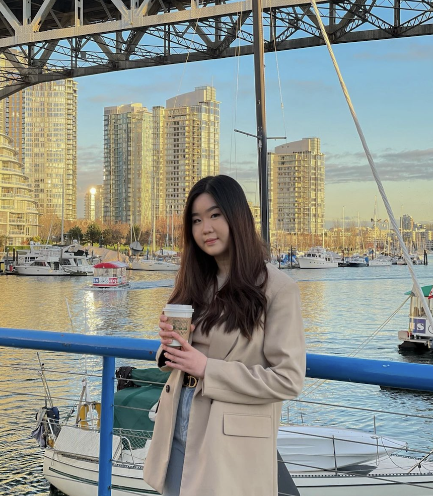

Stella Faustin Angelina
Vancouver, Canada
b. 2001
Hi, I am Stella Faustin, a designer and student and Simon Fraser University majoring in School of Interactive Arts and Technology based in Vancouver, BC. In my practise, I create websites, digital goods, visual identities, and graphics, with one medium having a subtle impact on the others. I strive to build human-centered, value-driven experiences that align with company objectives and brand identity. Feel free to look around my work
Other than designing, I find inspiration based from my daily activities such as looking vancouver beautiful sceneries and strolling around the cities.
